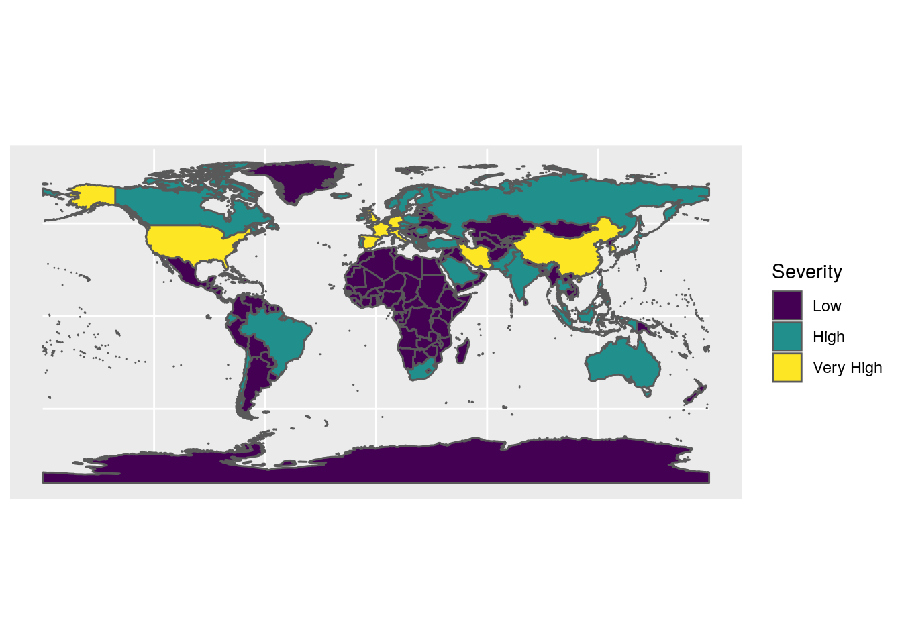
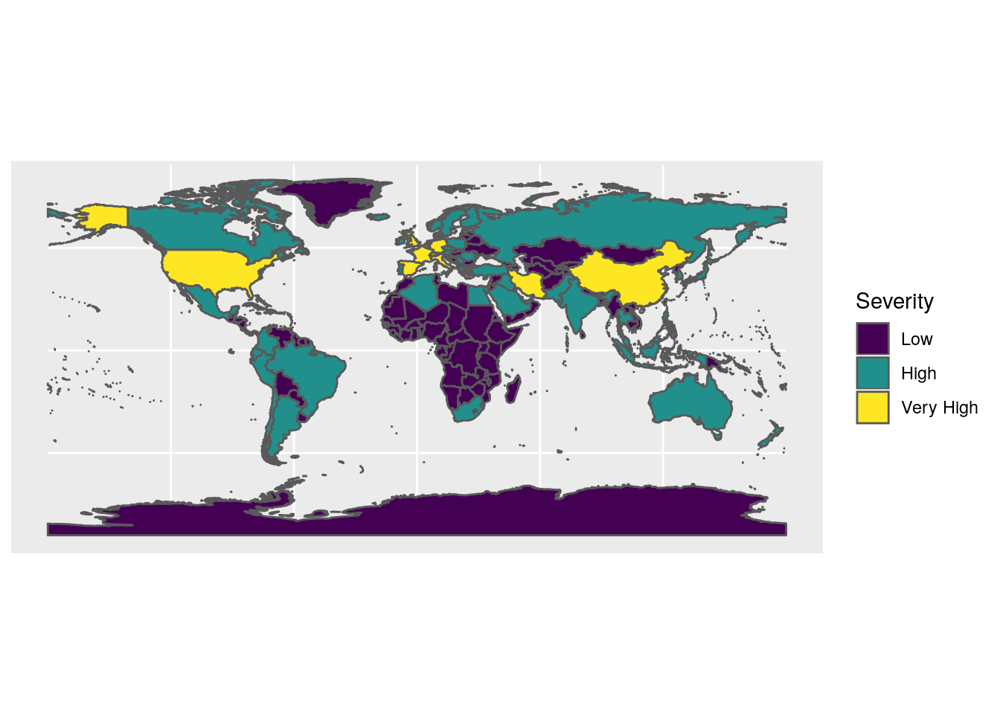

The Johns Hopkins University provide data on the coronavirus crisis, reportin the daily number of confirmed cases, deaths and recovered patients.
library('readr')
library('tidyverse')
url_base <-
"https://raw.githubusercontent.com/CSSEGISandData/COVID-19/master/csse_covid_19_data/csse_covid_19_time_series/time_series_covid19_"
type <- c('confirmed', 'deaths', 'recovered')
dta_list <- lapply( type, function(type_){
dta_prov <- read_csv(url(paste0(url_base, type_, '_global.csv'))) %>%
mutate(type = type_)
dta_prov %>%
rename(Province = `Province/State`, Country = `Country/Region`) %>%
pivot_longer(-c(Province, Country, Lat, Long, type), names_to = 'Date', values_to = 'Cases')
})
dta <- do.call('rbind', dta_list)Data are available from 2020-01-22 to 2020-03-25 for 177 countries.
The visualisation is done with only the most affected countries. The severity of the pandemy in a country is said to - Low if there are less than 500 confirmed cases - High if there are at least 501 confirmed cases - Very High low if there are at least 6001 confirmed cases
dta %>% filter(type == 'confirmed') %>% group_by(country_id) %>%
summarise ( m = max(Cases, na.rm = TRUE)) %>% filter( m > n1) -> country_list
dta %>% filter(type == 'confirmed') %>% group_by(country_id) %>%
summarise ( m = max(Cases, na.rm = TRUE)) %>% filter( m > n2) -> country_list_vhigh
dta %>% filter(country_id %in% country_list$country_id) -> dta
severity_class <- function(country){
prov <- ifelse(country %in% country_list$country_id, 'High', 'Low')
prov <- ifelse(country %in% country_list_vhigh$country_id, 'Very High', prov)
prov <- factor(prov, levels = c('Low', 'High', 'Very High'))
return(prov)
}
dta %>% mutate(Severity = severity_class(country_id)) -> dtaThe sf library, allows to produce map easily.
Mapping the data on a world map requires two merge the world shapefile and the Johns Hoppkins data as proposed in the following code. The matching between the two databases is done by creating a country_id identification (country name in lower case). The few mismatches in the 2 databases are idenified and corrected.
library(sf)
world_map <- st_read(dsn = 'datasets/shape_dir/TM_WORLD_BORDERS-0.3.shp') %>%
st_as_sf() %>% mutate(country_id = tolower(NAME))## Reading layer `TM_WORLD_BORDERS-0.3' from data source `/home/metienne/git/MarieEtienne.github.io/datasets/shape_dir/TM_WORLD_BORDERS-0.3.shp' using driver `ESRI Shapefile'
## Simple feature collection with 246 features and 11 fields
## geometry type: MULTIPOLYGON
## dimension: XY
## bbox: xmin: -180 ymin: -90 xmax: 180 ymax: 83.6236
## epsg (SRID): 4326
## proj4string: +proj=longlat +datum=WGS84 +no_defscountry_list %>% filter( !country_id %in% world_map$country_id) -> country_issues
country_issues$country_id## [1] czechia diamond princess iran korea, south
## [5] us
## 177 Levels: afghanistan albania algeria andorra ... zimbabweworld_map %>% mutate(avail = ifelse(country_id %in% country_list$country_id, TRUE, FALSE)) -> world_map
world_map %>%
mutate( country_id = ifelse(country_id == "united states", 'us' , country_id))%>%
mutate( country_id = ifelse(country_id == "iran (islamic republic of)", 'iran' , country_id)) %>%
mutate( country_id = ifelse(country_id == "korea, republic of", "korea, south" , country_id)) %>%
mutate( country_id = ifelse(country_id == "czech republic", "czechia" , country_id)) -> world_map Finally the three levels of severity are presented in the map below
world_map %>% mutate(Severity = severity_class(country_id)) -> world_map
world_map %>% ggplot() + geom_sf(aes(fill = Severity)) +
scale_fill_viridis_d() 
We can represent the evolution of coronavirus confirmed cases for the countries with high severity.
dta %>% filter(type == 'confirmed', Severity != 'Low') %>% ggplot() + geom_line(aes(x= Date, y = Cases, col = country_id)) + scale_y_continuous(trans='log2') + theme(legend.title = element_text( size = 10),
legend.text = element_text(size = 6) ) + ggtitle('Evolution of confirmed cases in highly affected countries')
Too many data on the graph , focus on the countries with High level of severity.
p <- dta %>%
filter(type == 'confirmed', Severity == 'Very High') %>%
arrange(country_id, Date) %>%
group_by(country_id) %>%
ggplot() +
geom_line(aes(x= Date, y = Cases, linetype=country_id, col = country_id)) +
scale_color_manual(values = couleurs)
pEvolution of the number of confirmed cases
and with a log scale
Evolution of the number of confirmed cases in log2 scale
As the pandemy does not start to spread at the same date on every country, one needs to define some new origine of time for every country, in order to allow the comparison between countries.
Change time origine : Accounting for the delay in the spread of the pandemy, we could decide to represent time since the first instant where the 80\(^\mbox{th}\) cases were confirmed.
Presented below is the number of confirmed cases.
dta %>%
filter(type == 'confirmed', Cases >= 80,Severity == 'Very High') %>%
group_by(country_id) %>%
arrange(Date) %>%
mutate(Date = Date - dplyr::first(Date)) %>%
ggplot() + geom_line(aes(x= Date, y = Cases, linetype=country_id, col = country_id, )) +
scale_color_manual(values = couleurs) +
scale_y_continuous(trans='log2') Evolution of confirmed cases, time elapsed since the 80th reported cases
Presented below is the number of deaths. Those time series are more reliable, as they do not depend on the test effort.
dta %>%
pivot_wider(names_from = type, values_from = Cases) %>%
filter( confirmed >= 80,Severity == 'Very High') %>%
group_by(country_id) %>%
arrange(Date) %>%
mutate(Date = Date - dplyr::first(Date)) %>%
ggplot() +
geom_line(aes(x= Date, y = deaths, linetype=country_id, col = country_id)) +
scale_color_manual(values = couleurs) +
scale_y_continuous(trans='log2')Evolution of the number of deaths, time elapsed since the 80th reported cases
As the number of confirmed cases might not be the best indicator of the spread of the pandemy, we choose, the time of the tenth death as the origin of date.
dta %>%
pivot_wider(names_from = type, values_from = Cases) %>%
filter( deaths >= 10,Severity == 'Very High') %>%
group_by(country_id) %>%
arrange(Date) %>%
mutate(Date = Date - dplyr::first(Date)) %>%
ggplot() + geom_line(aes(x= Date, y = deaths, linetype=country_id, col = country_id)) +
scale_color_manual(values = couleurs) +
scale_y_continuous(trans='log2') Evolution of the number of deaths, time elapsed since the 10th death